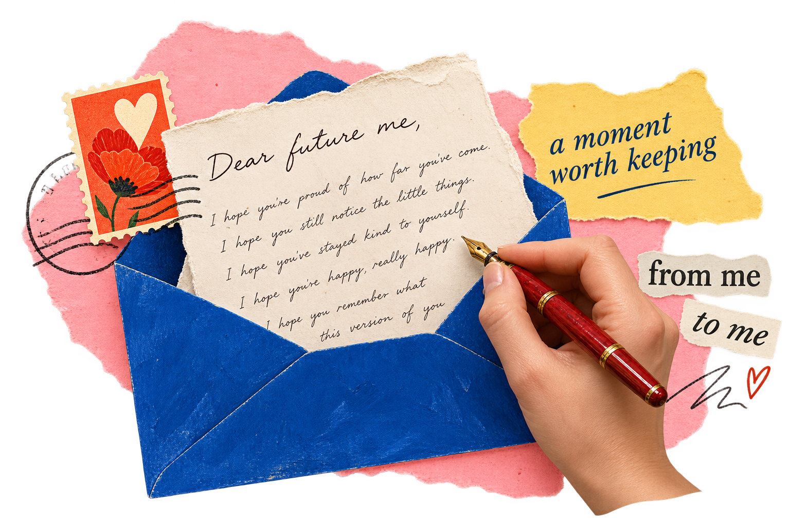
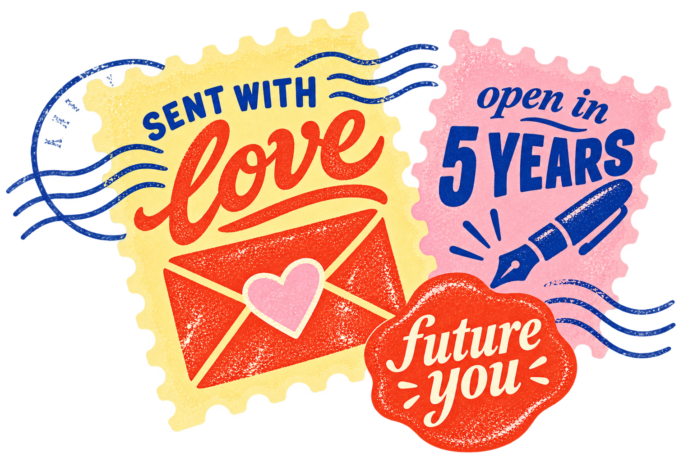

01
find your seat.
Join a pop-up. Pick your stationery, find a seat, and settle in. Solo or with a friend.
Join our exclusive letter-writing pop-up. Slow down, put pen to paper, and send a little piece of today to your future self.
Book your spot
The people you love. The things you’re figuring out. The little details you don’t want time to erase.
Come capture this chapter. We’ll send it back during the same month, one, three, or five years later.

One evening. One letter.
A future reunion.
Join a pop-up. Pick your stationery, find a seat, and settle in. Solo or with a friend.
Write what you want to remember. Choose one, three, or five years, then seal it.
We’ll send it back in your chosen year. Your handwriting. A different you.
Bring your thoughts.
We’ll make space for them.
New York City · Date and venue to be announced
We’re finding the right room for our first gathering.
Once announced, each event will link to its Luma page for details and booking.
Before you join us, after you write, and when life changes along the way.
An in-person letter-writing experience with a future surprise. You write a physical letter to your future self, seal it, and leave the future delivery to us.
Choose one, three, or five years. We’ll send your letter during the same month you wrote it, in the year you choose. Delivery is not tied to an exact day.
Start with the ordinary things: your favorite song, the people you spend time with, what you’re looking forward to. You don’t need to be a writer, and your letter doesn’t need to be profound.
Absolutely. Come solo, bring a friend, or make it a date. This is time to spend with your own thoughts, in the company of others doing the same.
No milestone required. A new job, birthday, move, or relationship can inspire a letter—but an ordinary season of life is just as worth remembering.
The confirmed event listing on Luma will outline the writing materials, future-delivery options, price, and any food or drinks included. Check those details before booking.
We’re finalizing the address-update process before bookings open. Clear instructions will be provided so you know how to keep your delivery details current.
Please check the cancellation and transfer terms on the specific Luma event before booking. Those details will be available when tickets go live.
Questions, collaborations, or a lovely space to share?